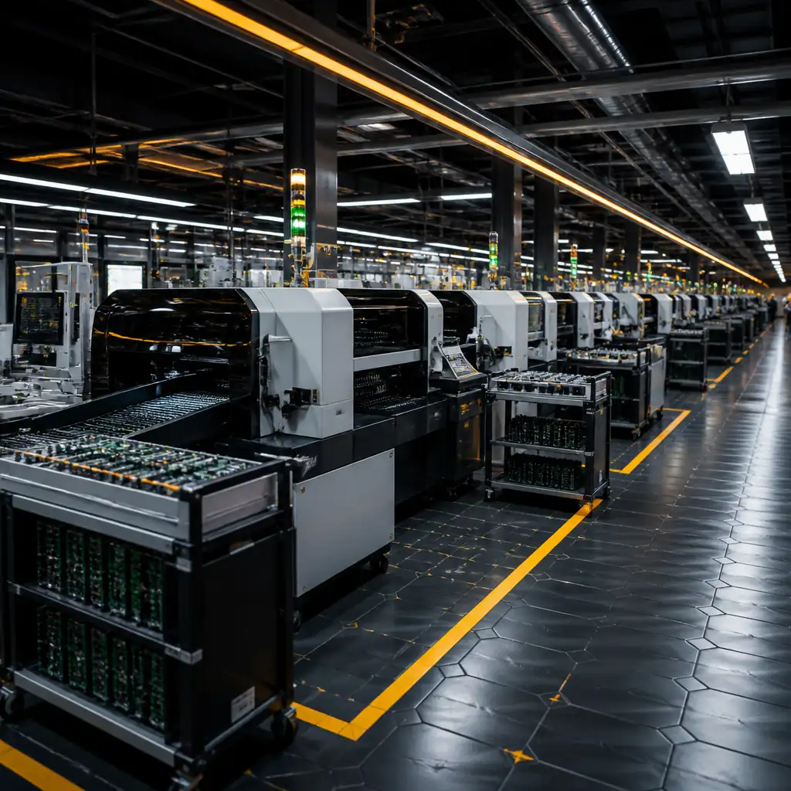

Capabilities / PCBA Assembly / Through-Hole
When surface mount is not an option — high-power connectors, transformers, electrolytic capacitors, and legacy components — our through-hole lines deliver the mechanical strength and current capacity your design demands. Dual-wave, selective, and hand-soldering capabilities under one roof.
Three Soldering Methods
Dual-wave system for high-volume through-hole production. The first turbulent wave penetrates tight spaces and ensures full coverage; the second smooth (laminar) wave removes bridges and excess solder. Handles boards up to 510mm wide. Lead-free SAC305 as standard. Ideal for single-sided THT boards and mixed-technology boards where SMT components are glued on the bottom side. Typical throughput: 200-400 boards per hour depending on board size and component density.
Programmable nozzle-based soldering for mixed-technology boards where only specific through-hole sites need soldering — typically after all SMT components are already placed and reflowed on both sides. A micro-nozzle applies solder to individual joints under programmed X-Y control with preheat, flux, solder, and dwell time precisely calibrated per joint. Eliminates the need for pallets, masking, or glue. Ideal for high-density boards with a handful of THT connectors on otherwise fully SMT designs.
IPC-J-STD-001 certified technicians for prototypes, rework, and low-volume production. Temperature-controlled stations with cartridge tips for consistent thermal delivery. Used when automated processes are uneconomical (1-50 units), for rework of defective joints caught at AOI, or for unusually large components (bus bars, heavy-gauge wires, large transformers) that exceed wave or selective soldering capability. Each joint is visually inspected to IPC-A-610 criteria.
Primary Method
Wave soldering remains the workhorse of through-hole assembly. Our dual-wave system applies flux (spray or foam), preheats the board through three controlled zones, then passes it over two sequential solder waves. The turbulent first wave ensures solder reaches every lead in every hole — even on densely populated boards. The smooth second wave peels away excess, eliminating bridges and icicles.
Precision Method
Modern PCB designs are overwhelmingly surface-mount — but still need a few through-hole connectors, relays, or large capacitors. Selective soldering solves this by soldering only the through-hole sites on a board that's already fully SMT-assembled on both sides. No pallets, no masking tape, no glue — just a programmed nozzle that visits each joint.
Connectors subject to repeated mating force, heavy components subject to vibration, or anything that needs to survive mechanical shock. Through-hole pins anchored through the board provide far greater pull-out and shear strength than surface-mount pads. Common in automotive, industrial, and power electronics.
Power transistors, large electrolytic capacitors, bus bars, transformers, and high-current connectors often require through-hole for thermal management and current-carrying capacity. Plated through-holes provide lower resistance and better heat dissipation than surface-mount pad connections. Standard in power and energy applications.
Through-hole solder joints form a full barrel fill, creating a 360° mechanical bond that resists the shear stress of repeated thermal cycling better than SMT fillets. Critical for under-hood automotive electronics, outdoor telecom equipment, and aerospace applications where temperature swings exceed 100°C in operation.
Some components — particularly high-power, high-voltage, and specialized connectors — are only available in through-hole packages. If your BOM includes DIP ICs, axial/radial passives, TO-220 transistors, or large pin headers, through-hole assembly is non-negotiable. We handle these seamlessly alongside SMT in a single production flow.
| Parameter | Wave Soldering | Selective Soldering |
|---|---|---|
| Board Width | Up to 510mm | Up to 510×460mm |
| Board Thickness | 0.8 – 3.2mm | 0.6 – 4.0mm |
| Solder Alloy | SAC305 (Pb-free), Sn63Pb37 (leaded) | |
| Flux Type | No-clean, water-washable | No-clean, rosin-based |
| Preheat Zones | 3-zone (top + bottom) | Bottom-side IR + nozzle preheat |
| Min. Pin Diameter | 0.6mm | 0.4mm |
| Min. Pitch (PTH) | 2.0mm | 1.27mm |
| Max. Component Height (Bottom) | 15mm (pallet-dependent) | 30mm (clearance zone) |
| Throughput | 200-400 boards/hour | 3-10 joints/second |
| Workmanship | IPC-A-610 Class 2/3, J-STD-001 | |
| Inspection | 100% visual + AOI where applicable | |
| Component Prep | Lead forming, cropping, pre-tinning available | |
Send your BOM and Gerber files. We'll evaluate the optimal soldering strategy — wave, selective, or hand — and return a complete quote with DFM recommendations within 24 hours.

Upload Gerber + BOM — 24h quote with free DFM review.